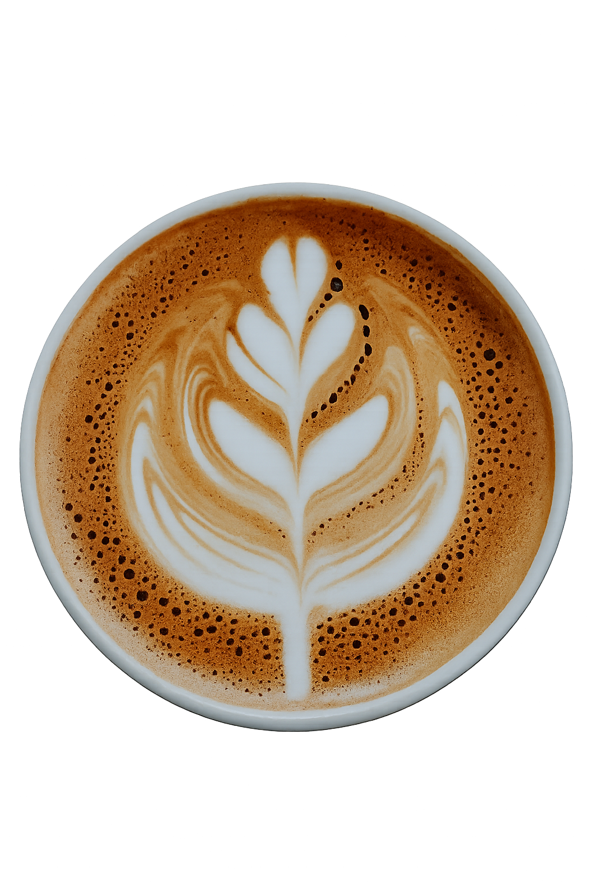

☕ Bienvenid@ a Santa Carla
El mejor café de la ciudad, preparado con pasión desde 2021. Vive la experiencia Santa Carla: buena música, pastelería fresca y un servicio cercano.


Granos seleccionados, tostado perfecto y baristas que aman lo que hacen. Pide tu favorito y acompáñalo con nuestros pasteles del día.